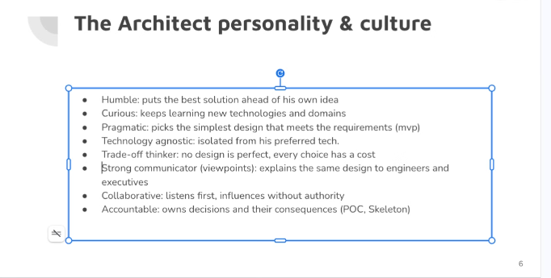
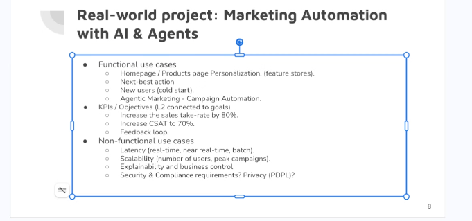
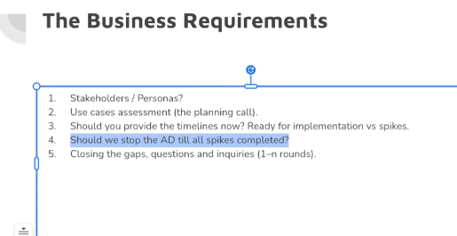
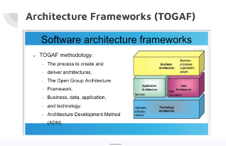
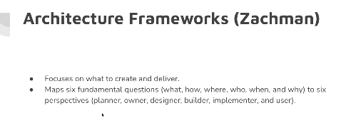
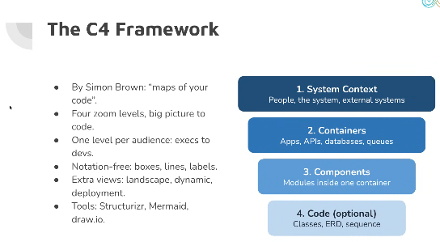
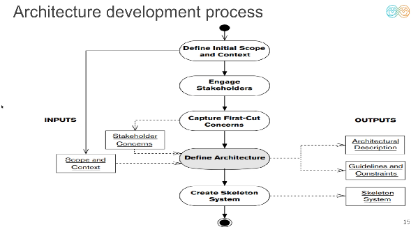
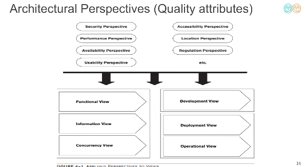
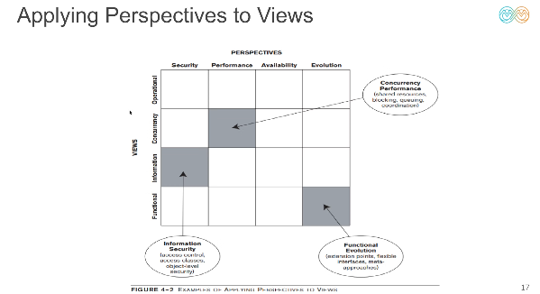
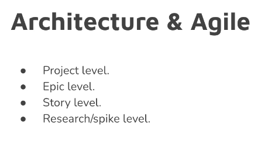

🏗️ AI Architecture — Session 1: Fundamentals, Frameworks & Practical Case Study
🎥 تسجيل السيشن الأولى (YouTube): AI Architecture — Session 1 Recording
الفكرة الجوهرية للـ Session:
الـ AI Architecture مش مجرد اختيار موديل أو كتابة كود، بل هو الربط بين أهداف البيزنس (Business Goals) والتصميم التقني (Technical Design) من خلال فهم المشكلة الحالية (As-Is)، وتحديد الشكل المستهدف (To-Be)، ودراسة الـ Trade-offs، وتطبيق معايير الجودة (Quality Attributes / Perspectives) مثل الـ Security والـ Performance على كل زاوية من زوايا النظام (Views).
🛠️ 1. الأدوات الأساسية لأي Software / AI Architect
وأنت بتعمل الـ Architecture لأي سيستم هتحتاج 3 أدوات أساسية تشتغل بيهم بالتوازي:
- أداة للرسم المعماري (Diagramming Tool): مثل
draw.io، أوMermaid، أوStructurizrلرسم الـ System Views. - أداة للتوثيق (Wiki / Documentation Tool): مثل
Word، أوNotion، أوConfluence، أوObsidianلكتابة الـ Architecture Design Document (ADD) والـ Requirements. - بيئة التطوير (IDE): لبناء الـ
POC (Proof of Concept)والـSkeleton Systemوتجربة القرارات عملياً.
🧠 2. شخصية وثقافة الـ Architect (The Architect Personality & Culture)

عشان تكون Architect ناجح، الموضوع بيبدأ بالـ Mindset وطريقة التفكير والتعامل مع التيم والـ Stakeholders:
- متواضع ومتقبل للآراء (
Humble): يضع مصلحة المشروع وأفضل حل فوق فكرته الشخصية؛ لازم تتقبل كل الآراء وتجربها عملياً عشان تعرف "ليه آه وليه لأ" بناءً على التجربة العملية والدليل مش مجرد انطباعات. - فضولي ودائم التعلم (
Curious): يواكب التقنيات الجديدة ويفهم الـ Domains المختلفة. - عملي وواقعي (
Pragmatic): يختار أبسط تصميم يحقق المطلوب في المرحلة الحالية (MVP) بدون تعقيد غير مبرر (Over-engineering). - غير متعصب لتكنولوجيا معينة (
Technology Agnostic): منفصل عن تفضيلاته الشخصية؛ يختار الأداة بناءً على مدى ملاءمتها للمشكلة. - يفكر بمنطق المقايضات (
Trade-off Thinker): مفيش تصميم مثالي (No design is perfect)، كل اختيار له تكلفة (Cost) ومميزات وعيوب؛ دورك تحدد الـ Trade-offs وإيه الـ Tools اللي هتستخدمها وليه اخترتها تحديداً. - متواصل قوي (
Strong Communicator - Viewpoints): لازم يبقى عندك Viewpoint على حسب أنت بتكلم مين فهتكلمه إزاي؛ تشرح نفس الـ Design للمهندسين (Engineers) بتفاصيل تقنية، وللإدارة (Executives) بلغة البيزنس والتكلفة والعائد. - تعاوني (
Collaborative): يستمع أولاً، ويؤثر في الفريق بدون فرض سلطة (Influences without authority). - مسؤول عن قراراته (
Accountable): يتحمل نتيجة قراراته المعمارية ويثبت صحتها من خلال عملPOCوSkeleton.
🎯 3. مشروع عملي: أتمتة التسويق بالذكاء الاصطناعي (Marketing Automation with AI & Agents)

كمثال تطبيقي حقيقي، لما بنبص لمشروع Marketing Automation مدعوم بالـ AI والـ Agents، بنقسم الرؤية إلى 3 محاور:
أ) حالات الاستخدام الوظيفية (Functional Use Cases)
- تخصيص الصفحة الرئيسية والمنتجات (
Homepage / Products Page Personalization): بالاعتماد على الـFeature Storesلعرض محتوى مخصص لكل شريحة أو مستخدم. - أفضل خطوة تالية (
Next-Best Action): توقع وتوجيه العميل للأكشن الأنسب له لحظياً. - التعامل مع المستخدمين الجدد (
New Users / Cold Start): إزاي نقدم تجربة ذكية ليوزر لسه معندناش ليه History كافي. - التسويق عبر الـ Agents (
Agentic Marketing - Campaign Automation): إزاي تخلي الـ Agent يعمل الـ Campaign ويديرها من البداية للنهاية.
ب) مؤشرات الأداء والأهداف (KPIs / Objectives - L2 connected to goals)
- لازم يكون عندك نوعين من الـ KPIs تتكلم بيهم مع الـ Client وتربطهم بأهدافه:
- Business KPIs: مثل زيادة معدل التحويل والمبيعات (
Increase sales take-rate by 80%)، ورفع رضا العملاء (Increase CSAT to 70%). - Technical KPIs & Feedback Loop: مثل تتبع الـ Feedback والـ Quality والـ Latency في أدوات المراقبة زي
Langfuseعشان تحسن الموديل باستمرار.
- Business KPIs: مثل زيادة معدل التحويل والمبيعات (
ج) المتطلبات غير الوظيفية (Non-Functional Use Cases / Quality Attributes)
- سرعة الاستجابة (
Latency): هل الـ Use Case محتاجةReal-time(لحظي وأنت فاتح الصفحة)، ولاNear real-time، ولاBatch(كل فترة في الخلفية)؟ - قابلية التوسع (
Scalability): استيعاب عدد المستخدمين وأوقات ذروة الحملات (Peak campaigns). - قابلية التفسير والتحكم (
Explainability & Business Control): قدرة البيزنس على فهم "ليه الـ AI أخذ القرار ده" والتحكم في القواعد. - الأمان والامتثال والقوانين (
Security, Compliance & Privacy): لازم تبقى عارف قوانين البلد اللي هتعمل فيها البروجكت (مثلPDPLفي السعودية/مصر أوGDPRفي أوروبا)، ولازم يبقى عندك إجابة واضحة لأي سؤال يسأله الـ Client عن السيستم.
📋 4. جمع وتحليل متطلبات البيزنس (The Business Requirements)

ما بعد تعريف البروجكت، بنبدأ نحدد الـ Business Requirements بدقة:
- سيناريو وقصة المشروع (
Project Story & Scenario): إيه القصة الكاملة للمشروع والمشكلة اللي بنحلها؟ - المعنيون والشخصيات (
Stakeholders / Personas):- السيستم هيشتغل إزاي مع الآخرين؟ هل هيتكامل مع سيستم تاني ولا هيستخدمه أشخاص مختلفين؟
- تحديد كل
Personaوالصلاحيات (Permissions / Roles) الخاصة بكل منها.
- تقييم حالات الاستخدام وإغلاق الفجوات (
Use Cases Assessment & Closing the Gaps):- لازم تحلل البروجكت وتفكر فيه بعمق وتقفل كل الأسئلة المفتوحة (
1–n roundsمن الميتينجز في الـ Planning Call) لحد ما الدنيا كلها تكون واضحة.
- لازم تحلل البروجكت وتفكر فيه بعمق وتقفل كل الأسئلة المفتوحة (
- الجداول الزمنية والـ Spikes (
Timelines: Ready for Implementation vs. Spikes):- هل ندي Timelines دلوقتي؟ لازم نفرق بين المهام الواضحة الجاهزة للتنفيذ (
Ready for implementation) والمهام اللي محتاجة بحث وتجربة أولية (Spikes). - سؤال مهم: هل نوقف الـ Architecture Design (
AD) لحد ما كل الـ Spikes تخلص؟ بنوازن بين استكمال التصميم الأساسي وتشغيل الـ Spikes بالتوازي في الأجزاء الغامضة.
- هل ندي Timelines دلوقتي؟ لازم نفرق بين المهام الواضحة الجاهزة للتنفيذ (
- فصل الأدوار (
Role Boundaries - Why/What vs. How/When):
مينفعش تاخد قرار Business من نفسك!
البيزنس يملك الـ Why & What (ليه بنعمل ده وإيه المطلوب)، بينما أنت كـ Architect تملك الـ How & When (إزاي هنبنيه تقنياً وإمتى هيتسلم) — فلازم كل طرف يعرف الـ Role بتاعه ويلتزم بيه.
🏛️ 5. أطر العمل المعمارية (Architecture Frameworks)
أولاً: مدرسة الـ TOGAF (The Open Group Architecture Framework)

- الفلسفة الأساسية: أنت بتبدأ بالبيزنس مش بالتكنولوجيا!
- طبقات TOGAF الأربع:
Business Architecture(العمليات، المؤسسة، الأشخاص).Data Architecture&Application Architecture(البيانات والخدمات).Technology Architecture(الهاردوير، السوفتوير، الشبكات).
- منهجية تطوير المعمارية (
ADM - Architecture Development Method): تعتمد على فهم الوضع الحالي (As-Is) والسيستم شغال إزاي دلوقتي، وإيه المشكلة اللي محتاجين عشانها نبني البروجكت الجديد (To-Be).
ثانياً: إطار عمل Zachman Framework

- يركز على ماذا سننشئ ونسلم (
Focuses on what to create and deliver). - يربط 6 أسئلة أساسية (
What, How, Where, Who, When, Why) بـ 6 منظورات للمعنيين (Planner, Owner, Designer, Builder, Implementer, User).
ثالثاً: إطار عمل الـ C4 Framework (Maps of Your Code)

صممه Simon Brown كـ 4 مستويات تقريب (Four zoom levels من الصورة الكبيرة إلى الكود)، بحيث كل مستوى يخاطب فئة معينة من الإدارة (Execs) للمطورين (Devs):
flowchart TD
L1["1. System Context (العقد والـ High-Level)\nPeople, the system, external systems"] --> L2["2. Containers (مستوى التطبيقات والـ APIs)\nApps, APIs, Databases, Queues"]
L2 --> L3["3. Components (الموديولات الداخلية)\nModules inside one container"]
L3 --> L4["4. Code - Optional (مستوى الكود)\nClasses, ERD, Sequence diagrams"]
- المستوى 1 (
System Context): ده يعتبر العقد (Contract) اللي بيحدد كل شيء هيتعمل على الـ High-level وعلاقة السيستم بالـ Users والأنظمة الخارجية. - المستوى 2 (
Containers): بيتكلم بشكل مفصل أكتر شوية (تطبيقات، قواعد بيانات، Queues، APIs) وهتحتاج فيه غالباً ترسم Diagrams واضحة. - المستوى 3 و 4 (
Components&Code): تفاصيل الموديولات والكلاسات جوه كل Container.
آخر اتنين (Components & Code) في الغالب الـ AI يقدر يعملهم أو يولدهم بسهولة، لكن أول اتنين (System Context & Containers) لازم أنت تفكر فيهم كويس جداً لأنهم أساس القرار المعماري.
🔄 6. عملية تطوير المعمارية وأهمية الـ POC (Architecture Development Process)

خطوات بناء المعمارية بتمشي في تسلسل واضح:
Define Initial Scope and Context(تحديد النطاق المبدئي والسياق).Engage Stakeholders(إشراك المعنيين وأصحاب المصلحة).Capture First-Cut Concerns(جمع المخاوف والمتطلبات الأولية).Define Architecture→ وبيطلع منها مخرجان أساسيان:Architectural Description+Guidelines and Constraints.Create Skeleton System / POC:- ليه بنعمل POC (Proof of Concept)؟ الأفضل دايماً تعمل POC أو Skeleton System عشان تشوف وتتأكد عملياً: هل كل الاتفاقات والتصميمات دي تطبيقها صح فعلاً على أرض الواقع ولا لأ؟
- دي خطوة بتخليك تكتشف الأخطاء بدري جداً (Fail Fast) أو تتأكد إن الوضع تمام فتكمل وتبدأ البناء بثقة.
🔍 7. الزوايا المعمارية وخصائص الجودة (Views & Architectural Perspectives)

في التصميم المعماري بنفرق بين مفهومين بيكملوا بعض:
- الـ Views (زوايا رؤية النظام): بتمثل السيستم من زوايا مختلفة:
Functional View|Information View|Concurrency ViewDevelopment View|Deployment View|Operational View
- الـ Perspectives (Quality Attributes / خصائص الجودة): الصفات غير الوظيفية اللي لازم تتطبق عبر الـ Views:
Security|Performance|Availability|Usability|Accessibility|Location|Regulation|Evolution
إزاي بنطبق الـ Perspectives على الـ Views؟

- القاعدة هي إنك بتعمل Apply لكل Quality Attribute (Perspective) على كل الـ Views الموجودة:
- مثال 1 (
Information View×Security Perspective): ينتج عنهInformation Security(مثل الـ Access Control، وتصنيف البيانات، والـ Object-level security). - مثال 2 (
Concurrency View×Performance Perspective): ينتج عنهConcurrency Performance(إدارة الـ Shared resources، والـ Queuing، ومنع الـ Blocking). - مثال 3 (
Functional View×Evolution Perspective): ينتج عنهFunctional Evolution(تصميم Interfaces مرنة تقبل التوسع مستقبلاً).
- مثال 1 (
⚡ 8. المعمارية مع منهجية Agile (Architecture & Agile)

توزيع القرارات المعمارية داخل Agile بيتقسم على 4 مستويات:
Project Level: تقدر تخلي القرارات على مستوى الـ Project ثابتة ومستقرة من البداية (زي الـDeployment، والـInfrastructure، والـ Cloud، والـ Security Baseline).Epic Level: تصميم التكامل بين المكونات الكبيرة للميزة (Feature / Epic).Story Level: تفاصيل التنفيذ المباشرة داخل الـ Sprint.Research / Spike Level: تجارب بحثية سريعة لحسم أي غموض تقني قبل تحويله إلى Stories.
بعد شرح الأساس النظري، طبقنا عملياً خطوة بخطوة على مشروع Marketing Automation Architecture Design:
- فتح Document موحدة لتوثيق المعمارية (
Architecture Design Document) ونكتب فيها: الـ Problem Statement، الـ Goals & Non-Goals، الـ Requirements، الـ Assumptions، والـ Viewpoints. - رسم دياجرام النظام الحالي
System As-Is، ثم أخذ نسخة منه (Copy) والبناء فوقها لرسم النظام المستهدفSystem To-Beبعد إضافة طبقات الـ AI.
📄 أولاً: توثيق المعمارية (Architecture Design Document - ADD)
1. تعريف المشروع والمشكلة (Project Overview & Problem Statement / Pain Points)
النظام عبارة عن منصة تجارة إلكترونية / تسويق محتاجة تتحول لـ AI-Driven Marketing Automation System. أهم نقاط الألم في النظام الحالي (Pain Points):
Static Home Page→Personalized per Segment: الصفحة الرئيسية حالياً ثابتة لكل الزوار، والمطلوب تحويلها لصفحة مخصصة ديناميكياً لكل شريحة أو مستخدم (Personalized per segment/user).- غياب التخصيص اللحظي (
Lack of Real-time Recommendations): العميل لا يظهر لهNext-Best Actionأو منتجات مناسبة لاهتماماته الحالية. - الحملات التسويقية اليدوية (
Manual Campaigns): إعداد الحملات يتم بشكل يدوي تقليدي وبطيء بدون استغلال الـAI Agents. - مشكلة المستخدم الجديد (
Cold Start Problem): الزوار الجدد بيحصلوا على تجربة عامة غير جذابة لعدم وجود سجل تصفح سابق لهم.
2. الأهداف وما خارج النطاق (Goals vs. Non-Goals)
🎯 الأهداف (Goals - ما سنحققه) |
🚫 خارج النطاق (Non-Goals - ما لن نفعله حالياً) |
|---|---|
تحويل الـ Static Homepage إلى صفحة مخصصة لكل شريحة (Personalized per Segment). |
عدم إعادة بناء نظام الـ Core E-Commerce أو الـ Checkout من الصفر. |
بناء Segmentation Model لتقسيم العملاء ديناميكياً بناءً على سلوكهم. |
عدم تدريب Foundation LLM خاص من الصفر (سنعتمد على موديلز جاهزة / Fine-tuned / APIs). |
بناء Recommendation System يقترح أفضل المنتجات والـ Next-Best Action. |
عدم استبدال أنظمة الـ ERP أو الـ Inventory الحالية، بل التكامل معها فقط. |
أتمتة الحملات التسويقية عبر AI Agents مع تطبيق حوكمة وأمان كامل (AI Guardrails). |
أي Features إضافية خارج نطاق التسويق والتخصيص في هذه المرحلة (لمنع الـ Scope Creep). |
كتابة الـ Non-Goals بوضوح من أول يوم بتحمي المشروع من تمدد النطاق (Scope Creep)، وبتخلي التيم والـ Client متفقين تماماً على حدود المشروع والجدول الزمني.
3. الافتراضات وتخطيط السعة والأداء (Assumptions & Capacity Planning)
من أهم الأجزاء في الـ Document هي الافتراضات المبنية على أرقام البيزنس (Assumptions) لأنها اللي بتحدد حجم الـ Infrastructure والـ Concurrency:
- الأداء والتزامن في أوقات الذروة المعتادة (
Performance & Concurrency in Peak Hours):- بالرجوع لأرقام التشغيل في آخر 6 شهور، أقصى عدد مستخدمين متزامنين (
Concurrent Users) في ساعات الذروة اليومية (Peak Hours) بيوصل إلى حوالي50 Concurrent Users.
- بالرجوع لأرقام التشغيل في آخر 6 شهور، أقصى عدد مستخدمين متزامنين (
- المواسم والأعياد (
Seasonality - Ramadan & Holidays):- في فترات المواسم مثل شهر رمضان، الأعياد (
Holidays)، ومواسم العروض الكبرى، الترافيك بيزيد بشكل ملحوظ وبيوصل التزامن إلى حوالي100 Concurrent Users(الضعف تقريباً).
- في فترات المواسم مثل شهر رمضان، الأعياد (
- أثر هذه الـ Assumptions على التصميم المعماري:
- تصميم الـ APIs والـ Model Inference بحيث تستوعب
50–100 Concurrent Usersبأمان بدونBottlenecks. - تفعيل الـ Auto-scaling والـ Caching (مثل
Redis/Feature Store) في مواسم رمضان والـ Holidays بدل حجز سيرفرات ضخمة طوال السنة بدون داعي.
- تصميم الـ APIs والـ Model Inference بحيث تستوعب
👁️ ثانياً: تطبيق الـ Viewpoints & Perspectives على المشروع
في الـ Document، بدأنا نطبق الـ Views ونربطها بالـ Quality Attributes (Perspectives)، ومن أهم الأمثلة اللي طبقناها:
1. زاوية الأمان والامتثال (Security View / Perspective) 🔒
لما بنبص للسيستم من زاوية الـ Security، بنغطي 3 طبقات أساسية:
flowchart LR
subgraph DataSecurity["1. حماية البيانات (Data Protection)"]
D1["Data in Transit\nتشفير النقل (TLS / HTTPS / mTLS)"]
D2["Data at Rest (Stored)\nتشفير التخزين (DB & Feature Store Encryption + RBAC)"]
end
subgraph Compliance["2. القوانين والخصوصية (Privacy & Compliance)"]
C1["PII Protection\nحماية وتعمية البيانات الشخصية (Masking / Anonymization)"]
C2["Regulations\nالالتزام بـ PDPL و GDPR"]
end
subgraph AISecurity["3. أمان الذكاء الاصطناعي (AI Security)"]
A1["AI Guardians / Guardrails\nفحص المدخلات والمخرجات"]
A2["Anti-Prompt Injection\nمنع اختراق الـ Prompts أو تسريب الداتا"]
end
DataSecurity --> Compliance --> AISecurity
- حماية البيانات في حالتيها (
Data in Transit&Data Stored / At Rest):Data in Transit(أثناء النقل): تأمين وتشفير كل حركة البيانات بين الـ Frontend، والـ Backend، والـ AI Models عبر بروتوكولات التشفير (HTTPS / TLS / mTLS).Data Stored / At Rest(أثناء التخزين): تشفير قواعد البيانات، الـ Data Warehouse، والـ Feature Stores، مع تحديد صلاحيات الوصول بدقة (Role-Based Access Control - RBAC).
- الخصوصية والامتثال القانوني (
PII,PDPL,GDPR):- التعامل الحذر جداً مع البيانات الشخصية (
PII - Personally Identifiable Information) مثل اسم العميل، رقمه، إيميله، وعملMasking / Anonymizationلها قبل ما تروح لأي موديل AI. - التوافق الكامل مع قوانين حماية البيانات مثل
PDPL(قانون حماية البيانات الشخصية) وGDPR.
- التعامل الحذر جداً مع البيانات الشخصية (
- حماية نماذج الذكاء الاصطناعي (
AI Guardians & Prompt Injection Defense):- وجود طبقة
AI Guardians / Guardrailsقبل وبعد الموديل. - الحماية من هجمات
Prompt InjectionوJailbreakingعشان مفيش مستخدم يتلاعب بالـ Agent أو يخليه يطلع بيانات عملاء تانيين أو يخرج عن سياق البيزنس.
- وجود طبقة
2. زاوية النشر والبنية التحتية (Deployment View) 🚀
بتوضح إزاي المكونات البرمجية والموديلز هتتنشر وتشتغل على الهاردوير أو الكلاود:
- بيئة الاستضافة (
Hosting & Residency): تحديد هل الـ Deployment هيكون على Cloud (مثل AWS / GCP / Azure) ولا On-Premise / Local Cloud Region داخل نفس البلد لتحقيق شروط الـPDPL. - الحاويات والتشغيل (
Containerization & Orchestration): تشغيل الـ Services والـ AI Models داخلDocker Containersوإدارتها بـKubernetes / Cloud RunمعLoad Balancer. - التوسع في المواسم (
Scaling for Seasonality): ضبط الـ Auto-scaling ليتعامل مع الـ50 Concurrent Usersفي الأيام العادية، ويتمدد تلقائياً لـ100+ Concurrent Usersفي رمضان والـ Holidays. - فصل البيئات (
Environments): عزل بيئاتDevelopment، وStaging، وProductionمع خطوطCI/CD & MLOps.
3. زوايا معمارية أخرى (Other Views) 🧩
Information / Data View: إدارة مصادر البيانات، الـ Feature Store، تدفق البيانات للـ Segmentation والـ Recommendation، والـ Data Governance.Concurrency View: إدارة الطلبات المتزامنة، الـ Async Queues في حملات الـ Marketing، ومنع الـ Bottlenecks وقت الذروة.Operational & Monitoring View: متابعة الـ Logs، والـ Traces، والـ Model Drift، والـ Feedback Loop عبر أدوات مثلLangfuseوPrometheus/Grafana.
🗺️ ثالثاً: الرسم المعماري للنظام — من الـ As-Is إلى الـ To-Be
في الجزء الأخير من السيشن، طبق الـ Instructor منهجية رسم الوضع الحالي ثم التعديل عليه لبناء الوضع المستهدف:
1. النظام الحالي قبل التطوير (System As-Is Diagram)
يعبر عن السيستم الموجود حالياً: المستخدم بيدخل على ويب سايت أو أبلكيشن بيعرض Static Homepage، بيتواصل مع الباك إند التقليدي وقواعد البيانات بدون وجود تخصيص ذكي أو طبقات AI.
flowchart LR
User(["👤 User / Customer"]) --> Web["🖥️ Web / Mobile App\n(Static Homepage)"]
Web --> API["⚙️ Core Backend API"]
API --> DB[("🗄️ Core Database\n(Users, Products, Orders)")]
Marketer(["👩💼 Marketing Team"]) --> ManualCamp["📢 Manual Campaign Tool\n(Static Rules & Bulk Emails)"]
ManualCamp --> API
2. النظام المستهدف بعد إضافة الذكاء الاصطناعي (System To-Be Diagram)
أخذنا نسخة (Copy) من دياجرام الـ As-Is وبدأنا نضيف عليه مكونات وطبقات الـ AI الجديدة عشان يتحول إلى To-Be:
AI for Security (AI Guardrails / Guardians): طبقة أمان ذكية في الواجهة لفحص المدخلات والمخرجات، منع الـPrompt Injection، وحماية الـPIIوفقاً للـPDPL / GDPR.Segmentation Model: موديل لتقسيم العملاء إلى شرائح ديناميكية (Dynamic User Segments) بناءً على تفاعلاتهم وبياناتهم في الـFeature Store.Recommendation System: محرك توصيات يعتمد على شريحة العميل وسلوكه ليقدمPersonalized Homepage / ProductsوNext-Best Action(مع معالجة الـCold Startللمستخدمين الجدد).Agentic Marketing / Campaign Automation: نظام Agents ذكي يساعد فريق التسويق في تصميم وإطلاق وتخصيص الحملات أوتوماتيكياً مع وجودFeedback Loop(مثلLangfuse) لقياس الـ KPIs.
flowchart TB
User(["👤 User / Customer\n(50 Peak / 100 Seasonality)"]) --> Guardrails
subgraph SecurityLayer["🛡️ AI Security & Governance Layer (Security View)"]
Guardrails["🔒 AI Guardians / Guardrails\n(Anti-Prompt Injection, PII Masking, PDPL/GDPR)"]
end
Guardrails --> Web["🖥️ Personalized Web / App\n(Dynamic Homepage & Next-Best Action)"]
Web --> API["⚙️ Core Backend / API Gateway"]
API --> DB[("🗄️ Core Database\n(Encrypted at Rest)")]
subgraph AILayer["🧠 AI & Personalization Engine (Added in To-Be)"]
FS[("⚡ Feature Store\n(User & Product Features)")]
SegModel["👥 Segmentation Model\n(Dynamic User Segments & Cold Start)"]
RecSys["🎯 Recommendation System\n(Personalized Products & Next-Best Action)"]
AgentCamp["🤖 Agentic Campaign Automation\n(End-to-End Smart Campaigns)"]
end
DB --> FS
FS --> SegModel
SegModel --> RecSys
RecSys --> API
Marketer(["👩💼 Marketing Team"]) --> Guardrails
Guardrails --> AgentCamp
AgentCamp --> RecSys
subgraph Observability["📊 Observability & Feedback Loop"]
Langfuse["📈 Langfuse / Monitoring\n(Technical & Business KPIs, Feedback Loop)"]
end
RecSys -.-> Langfuse
AgentCamp -.-> Langfuse
Web -.->|User Feedback & Clicks| FS
✅ ملخص سريع لخطوات العمل العملي لأي مشروع AI Architecture
- افهم البيزنس أولاً (
TOGAF): اسأل عن الـ Story، الـ Personas، والـ Pain Points، وتذكر أن البيزنس يملك الـWhy & Whatوأنت تملك الـHow & When. - اكتب الـ
Architecture Design Document: وثّق الـGoals، والـNon-Goals، والـRequirements، والـAssumptionsبالأرقام (مثل الـPeak Concurrency = 50والـSeasonality = 100). - طبّق الـ
Perspectivesعلى الـViews: ركز بشكل خاص على الـSecurity View(Data in Transit & Stored،PII،PDPL/GDPR،AI Guardians،Prompt Injection) والـDeployment View. - ارسم الـ
As-Isثم ابني عليه الـTo-Be: ابدأ بالنظام الحالي، ثم انسخه وضيف عليه طبقات الـ AI (AI Security،Segmentation Model،Recommendation System،Marketing Agents). - اختبر قراراتك بـ
POC / Skeleton: للتأكد من صحة التصميم عملياً واكتشاف الأخطاء مبكراً.